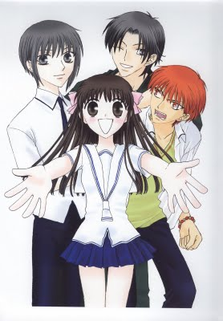

-
Alternative Names: Furuba
Author(s): Takaya Natsuki
Genres: Comedy, Drama, Harem, Psychological, Romance, School Life, Shoujo, Supernatural
Release:
Status: Complete
Type: Manga
Length: 23 Volumes 136 Chapters
Read Online @:

More Infor @:

Notes
Tohru Honda is an orphaned school girl that camped in the woods...she later finds out that "the woods" is actually the backyard of Shigure Sohma and that she has to move to a different location. She ends up staying with Shigure's home along with her classmates Yuki and Kyo when she finds out the Sohma family secret...that if 13 of the family members get hugged by the opposite sex they turn into their respective zodiac animal!! It is a fun waky series everyone should at least try and read.